第8世代（ガラル地方ほか）ポケモンの英語名一覧
全89匹の英語名と由来
第8世代（ガラル地方ほか）のポケモン89匹の英語名を、図鑑番号順にまとめました。名前を押すと、英語版図鑑の説明文と日本語訳、英語名の由来が見られます。
| No. | 日本語名 | 英語名 | 英語名の由来 |
|---|---|---|---|
| 810 | Grookey | groove（みぞ、ノリ）、monkey（サル）とrookie（新人） | |
| 811 | 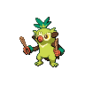 バチンキー | Thwackey | thwack（バシッ）とmonkey（サル） |
| 812 | Rillaboom | gorilla（ゴリラ）とboom（ドカン） | |
| 813 | Scorbunny | scorch（焦がす）、score（得点）とbunny（うさちゃん） | |
| 814 | Raboot | rabbit（ウサギ）、foot（足）、soot（すす）とboot（ブーツ） | |
| 815 | Cinderace | cinder（燃えかす）とace（エース） | |
| 816 | Sobble | sob（すすり泣く）、bubble（泡）とdribble（ドリブル） | |
| 817 | Drizzile | drizzle（霧雨）とreptile（爬虫類） | |
| 818 | Inteleon | intel（情報）、intellect（知性）とchameleon（カメレオン） | |
| 819 | 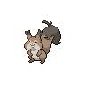 ホシガリス | Skwovet | squirrel（リス）とcovet（ほしがる） |
| 820 | Greedent | greed（欲ばり）とrodent（げっ歯類） | |
| 821 | 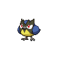 ココガラ | Rookidee | Rook（チェスの駒のルーク）、rookie（新人）、kid（子ども）とchickadee（コガラ） |
| 822 | Corvisquire | corvid（カラスの仲間）、squire（従者）とesquire（従者） | |
| 823 | Corviknight | Corvidae（カラス科）とknight（騎士） | |
| 824 | 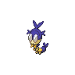 サッチムシ | Blipbug | フランス語の名前は「Larvadar」で、larve（幼虫）、radar（レーダー）から作られている |
| 825 | Dottler | dot（点）とDoppler radar（ドップラーレーダー） | |
| 826 | Orbeetle | orb（球）、orbit（軌道）、orbital（軌道の）とCoccinellidae（テントウムシ科） | |
| 827 | Nickit | nick（盗む）とkit（キツネなどの子） | |
| 828 | 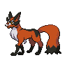 フォクスライ | Thievul | thief（泥棒）、evil（悪）、vulpine（キツネの）とvulpine（キツネの） |
| 829 | 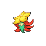 ヒメンカ | Gossifleur | Gossypium（ワタ属）とfleur（フランス語で「花」） |
| 830 | 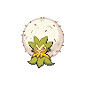 ワタシラガ | Eldegoss | elder（年長の）、Gossypium（ワタ属）とgossamer（クモの糸） |
| 831 | Wooloo | wool（羊毛）とloom（はた織り機、ぼんやり現れる） | |
| 832 | 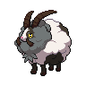 バイウールー | Dubwool | double（二重の）とwool（羊毛） |
| 833 | Chewtle | chew（かむ）とturtle（カメ） | |
| 834 | 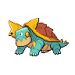 カジリガメ | Drednaw | dread（恐怖）、gnaw（かじる）とdreadnought（ド級戦艦） |
| 835 | Yamper | yap（キャンキャンほえる）、ampere（電流の単位アンペア）とscamper（ちょこちょこ走る） | |
| 836 | Boltund | bolt（稲妻）、Hund（ドイツ語で「犬」）とhound（猟犬） | |
| 837 | Rolycoly | roly-poly（ずんぐりした）とcoal（石炭） | |
| 838 | Carkol | car（車）、cart（荷車）、carbon（炭素）とcoal（石炭） | |
| 839 | 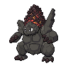 セキタンザン | Coalossal | coal（石炭）とcolossal（巨大な） |
| 840 | 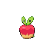 カジッチュ | Applin | apple（りんご）とin（中に） |
| 841 | 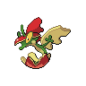 アップリュー | Flapple | flap（はばたく）とapple（りんご） |
| 842 | 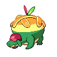 タルップル | Appletun | apple（りんご）、Appleton（アップルトン（りんごの品種名））、ton（トン）とapple turnover（… |
| 843 | Silicobra | silicon（ケイ素）とcobra（コブラ） | |
| 844 | 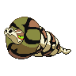 サダイジャ | Sandaconda | sand（砂）とanaconda（アナコンダ） |
| 845 | Cramorant | cram（詰めこむ）とcormorant（ウ（鳥）） | |
| 846 | 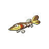 サシカマス | Arrokuda | arrow（矢）とbarracuda（カマス） |
| 847 | Barraskewda | barracuda（カマス）とskewer（串） | |
| 848 | 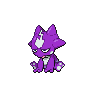 エレズン | Toxel | toxic（有毒な）、toddle（よちよち歩く）、cell（細胞）とelectric（電気の） |
| 849 | 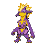 ストリンダー | Toxtricity | toxic（有毒な）、toxicity（毒性）とelectricity（電気） |
| 850 | Sizzlipede | sizzle（ジュージュー）、millipede（ヤスデ）とcentipede（ムカデ） | |
| 851 | 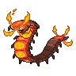 マルヤクデ | Centiskorch | centipede（ムカデ）とscorch（焦がす） |
| 852 | Clobbopus | clobber（ぶんなぐる）とoctopus（タコ） | |
| 853 | Grapploct | grapple（組みつく）、octopus（タコ）とlocked（鍵がかかった） | |
| 854 | 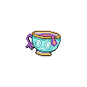 ヤバチャ | Sinistea | sinister（不吉な）とtea（お茶） |
| 855 | Polteageist | poltergeist（ポルターガイスト）とtea（お茶） | |
| 856 | 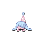 ミブリム | Hatenna | hat（帽子）とantenna（触角） |
| 857 | Hattrem | hat（帽子）とtremble（震える） | |
| 858 | Hatterene | hatter（帽子屋）とserene（おだやかな） | |
| 859 | 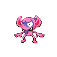 ベロバー | Impidimp | imp（小鬼）、impede（じゃまする）、impediment（障害）とimpudent（生意気な） |
| 860 | Morgrem | morbid（病的な）、morgue（死体安置所）とgremlin（いたずら妖精グレムリン） | |
| 861 | Grimmsnarl | grim（いかめしい）、grimace（しかめ面）、grimoire（魔導書）とGrimm（グリム童話） | |
| 862 | 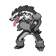 タチフサグマ | Obstagoon | obstacle（障害物）、obstruct（ふさぐ）、raccoon（アライグマ）とgoon（ごろつき） |
| 863 | Perrserker | purr（ゴロゴロ（猫ののど））、Persian（ペルシャ猫）とberserker（狂戦士） | |
| 864 | Cursola | curse（呪い）とCorsola（サニーゴ） | |
| 865 | 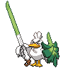 ネギガナイト | Sirfetch'd | Sir（サー（騎士の敬称））とFarfetch'd（カモネギ） |
| 866 | Mr. Rime | Mr.（「〜さん」）とrime（霧氷） | |
| 867 | Runerigus | rune（ルーン文字）、egregious（ひどい）とCofagrigus（デスカーン） | |
| 868 | Milcery | milk（ミルク）とsorcery（魔術） | |
| 869 | Alcremie | alchemy（錬金術）、cream（クリーム）、crème（フランス語で「クリーム」）とcreamy（クリームのような… | |
| 870 | 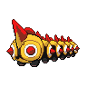 タイレーツ | Falinks | phalanx（密集陣形）とlinks（ドイツ語で「左」） |
| 871 | Pincurchin | pincushion（針山）とsea urchin（ウニ） | |
| 872 | Snom | snow（雪）、worm（虫）とnom（もぐもぐ） | |
| 873 | Frosmoth | frost（霜）とmoth（ガ） | |
| 874 | 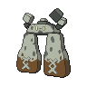 イシヘンジン | Stonjourner | stone（石）とsojourner（滞在者） |
| 875 | 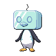 コオリッポ | Eiscue | Eis（ドイツ語で「氷」）とice cube（角氷） |
| 876 | 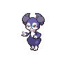 イエッサン | Indeedee | indeed（まさに）、phrase（決まり文句）とyes indeedy（「その通り！」） |
| 877 | Morpeko | ||
| 878 | Cufant | Cu（銅の元素記号）、cuprum（ラテン語で「銅」）、cute（かわいい）とelephant（ゾウ） | |
| 879 | Copperajah | copper（銅）とMaharajah（インドの王マハラジャ） | |
| 880 | Dracozolt | draco（ラテン語で「竜」）、volt（ボルト（電圧の単位））とjolt（衝撃） | |
| 881 | 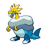 パッチルドン | Arctozolt | arctic（北極の）、volt（ボルト（電圧の単位））とjolt（衝撃） |
| 882 | Dracovish | draco（ラテン語で「竜」）、fish（魚）、vicious（凶暴な）とOrdovician（オルドビス紀） | |
| 883 | Arctovish | arctic（北極の）、fish（魚）、vicious（凶暴な）とOrdovician（オルドビス紀） | |
| 884 | 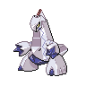 ジュラルドン | Duraludon | duralumin（ジュラルミン）、durable（頑丈な）、dragon（ドラゴン）とdon（首領） |
| 885 | 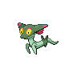 ドラメシヤ | Dreepy | dragon（ドラゴン）、dreary（わびしい）とcreepy（不気味な） |
| 886 | 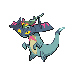 ドロンチ | Drakloak | dragon（ドラゴン）、drake（竜、オスのカモ）とcloak（マント） |
| 887 | 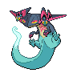 ドラパルト | Dragapult | poltergeist（ポルターガイスト）とsepultura（スペイン語で「埋葬」） |
| 888 | Zacian | cyan（シアン（青緑色））がもとになっていると考えられている | |
| 889 | 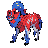 ザマゼンタ | Zamazenta | magenta（赤紫色）がもとになっていると考えられている |
| 890 | Eternatus | Aether（天空の上層を満たすとされたエーテル）、eternal（永遠の）、eternity（永遠）とaeternat… | |
| 891 | Kubfu | cub（熊などの子）とkung fu（カンフー） | |
| 892 | 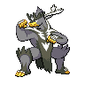 ウーラオス | Urshifu | ursus（ラテン語で「熊」）とshifu（師父（中国語で先生）） |
| 893 | 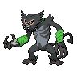 ザルード | Zarude | rude（無礼な）がもとになっていると考えられている |
| 894 | 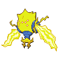 レジエレキ | Regieleki | regis（ラテン語で「王の」）がもとになっていると考えられている |
| 895 | Regidrago | regis（ラテン語で「王の」）とdragon（ドラゴン） | |
| 896 | Glastrier | glacier（氷河）とdestrier（中世の軍馬） | |
| 897 | 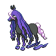 レイスポス | Spectrier | spectre（亡霊）とdestrier（中世の軍馬） |
| 898 | 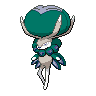 バドレックス | Calyrex | calyx（がく（花の部分））、rex（ラテン語で「王」）とcarex（スゲ属） |